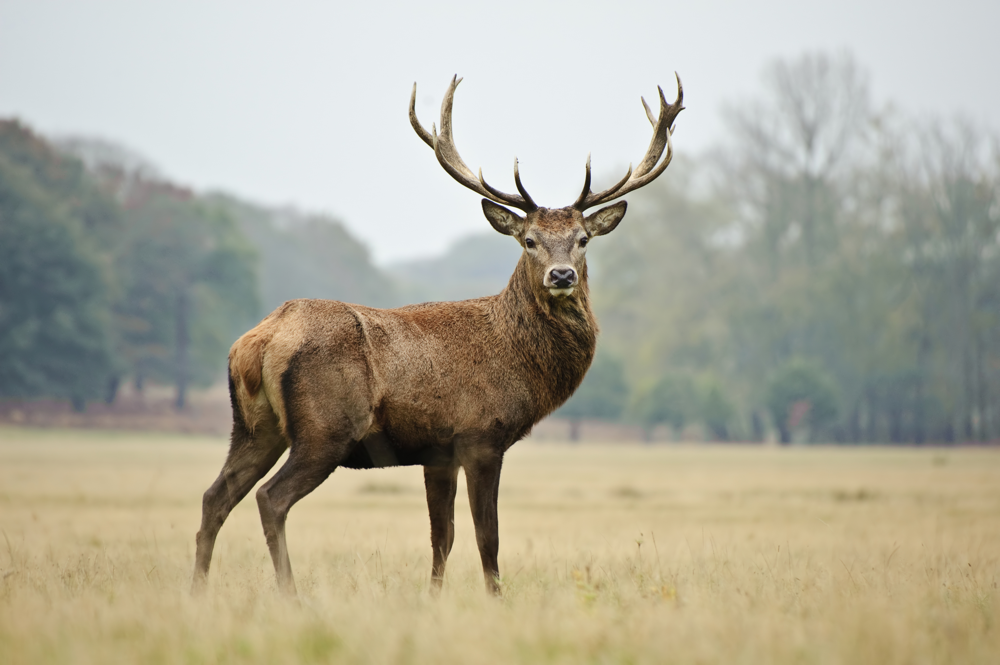
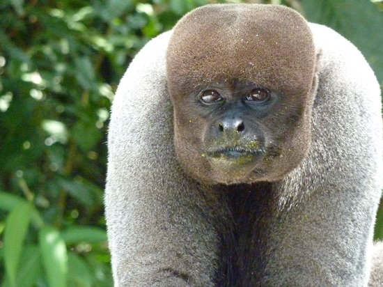
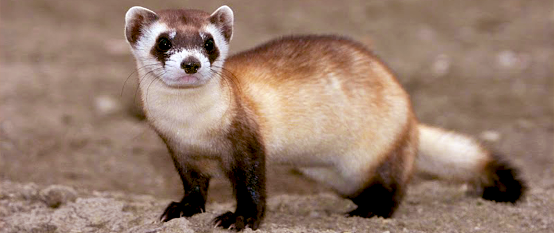
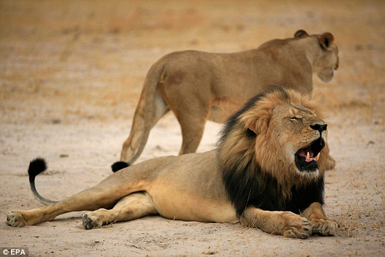
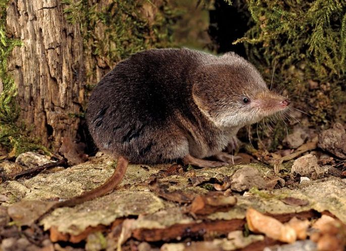
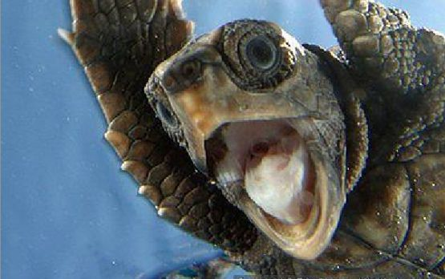

Red Deer

Tree Crab

Wooly Monkey


Black Footed Ferret
The black-footed ferret (Mustela nigripes), also known as the American polecat[2] or prairie dog hunter,[3] is a species of mustelid native to central North America. It is listed as endangered by the IUCN, because of its very small and restricted populations. First discovered by Audubon and Bachman in 1851, the species declined throughout the 20th century, primarily as a result of decreases in prairie dog populations and sylvatic plague.
Magic Lion
The lion (Panthera leo) is one of the big cats in the genus Panthera and a member of the family Felidae. The commonly used term African lion collectively denotes the several subspecies in Africa. With some males exceeding 250 kg (550 lb) in weight,[5] it is the second-largest living cat after the tiger, barring hybrids like the liger.[6][7] Wild lions currently exist in sub-Saharan Africa and in India (where an endangered remnant population resides in and around Gir Forest National Park). In ancient historic times, their range was in most of Africa, including North Africa, and across Eurasia from Greece and southeastern Europe to India. In the late Pleistocene, about 10,000 years ago, the lion was the most widespread large land mammal after humans: Panthera leo spelaea lived in northern and western Europe and Panthera leo atrox lived in the Americas from the Yukon to Peru.[8] The lion is classified as a vulnerable species by the International Union for Conservation of Nature (IUCN), having seen a major population decline in its African range of 30–50% over two decades during the second half of the twentieth century.[3] Lion populations are untenable outside designated reserves and national parks. Although the cause of the decline is not fully understood, habitat loss and conflicts with humans are the greatest causes of concern. Within Africa, the West African lion population is particularly endangered. In the wilderness, males seldom live longer than 10 to 14 years, as injuries sustained from continual fighting with rival males greatly reduce their longevity.[9] In captivity they can live more than 20 years. They typically inhabit savanna and grassland, although they may take to bush and forest. Lions are unusually social compared to other cats. A pride of lions consists of related females and offspring and a small number of adult males. Groups of female lions typically hunt together, preying mostly on large ungulates. Lions are apex and keystone predators, although they are also expert scavengers obtaining over 50 percent of their food by scavenging as opportunity allows. While lions do not typically hunt humans, some have. Sleeping mainly during the day, lions are active primarily at night (nocturnal), although sometimes at twilight (crepuscular).[10][11] Highly distinctive, the male lion is easily recognised by its mane, and its face is one of the most widely recognised animal symbols in human culture. Depictions have existed from the Upper Paleolithic period, with carvings and paintings from the Lascaux and Chauvet Caves in France dated to 17,000 years ago, through virtually all ancient and medieval cultures where they once occurred. It has been extensively depicted in sculptures, in paintings, on national flags, and in contemporary films and literature. Lions have been kept in menageries since the time of the Roman Empire, and have been a key species sought for exhibition in zoos over the world since the late eighteenth century. Zoos are cooperating worldwide in breeding programs for the endangered Asiatic subspecies.
Mole Shrew
Like shrews, it has a pelage with guard hairs and underfur.[4] Its fur is dense and soft. The color ranges from dark gray to a sooty bluish-black.[4] Its tail is about half the length of its head and body.[4] Its tail is also covered with scales and scattered coarse hairs.[4] It has a long, flattened snout, and a short but thick, bristled tail. It is the smallest of the American moles.[4] It is about 10 cm (3.9 in) in length including a 3 centimetres (1.2 in) tail, and weighs about 10 g (0.35 oz). It has a zygoma and auditory bullae, which are absent in shrews, but present in moles.[6] The enamel that covers its teeth is white instead of mahogany or reddish-brown, like it is in shrews.[6] It also lacks a penis bone.[6] Its front paws are smaller and do not face outwards from the body as in more fossorial moles, and so are more similar to those of shrews. The front paws are also broad with bifurcate phalanges, which provide more support for the claws in order to dig.[6] Also, the three middle claws of the front paws are elongated and the eyes are also completely covered by skin.[4] In addition to the front paws, the rest of its morphological features allow it to be highly fossorial and subterranean.[6] It has a streamlined body that allow it to move smoothly through tunnels and short appendages that are kept close to the body.[6] It also has no ear pinnae, which is the external part of the ear.[6] These features reduce drag when it digs and when it moves through tunnels.[6]
Sea Turtle
The majority of a sea turtle's body is protected by its shell. The turtle's shell is divided into two sections: carapace (the dorsal portion) and plastron (the ventral portion). The shell is made up of smaller plates called scutes. The leatherback is the only sea turtle that does not have a hard shell. Instead, it bears a mosaic of bony plates beneath its leathery skin. In general, sea turtles have a more fusiform body plan than their terrestrial or freshwater counterparts. The reduced volume of a fusiform body means sea turtles can not retract their head, legs, and arms into their shells for protection like other turtles can.[5] However this more stream-line body plan reduces drag in the water and allows the turtle to swim more easily. The leatherback is the largest species of sea turtle. Measuring 2–3 meters (6–9 ft) in length, and 1-1.5 m (3–5 ft) in width, weighing up to 700 kilograms (1500 lb). Other species are smaller, being mostly 60–120 cm (2–4 ft) and proportionally narrower.[6]
